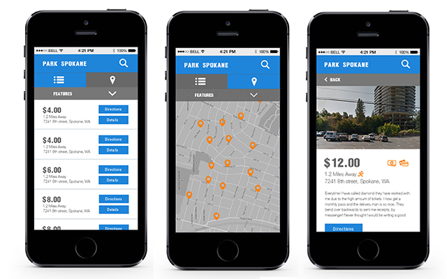
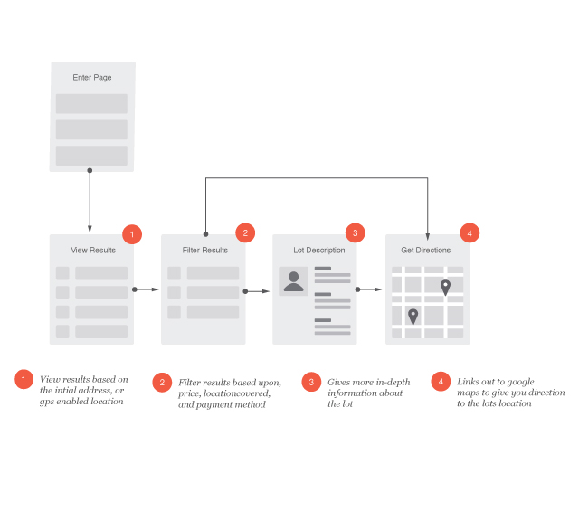

PARK SPOKANE - UX & UI

This was our intern project over the coarse of the summer. We presented the work we had completed to the complany and the end of our internship.
MY ROLE
To create to user experience and user interface design. This included researching, userflows, wireframing, and prototyping.
THE PROBLEM
Finding somewhere to park in downtown Spokane without spending a fortune can be very hard. We wanted to create a site that would aid users in this quest.
THE PROJECT
We began be doing research and gather data on local parking gargages and lots in Spokane. We knew that we wanted to focus our attention on allowing the user to find the parking lots near their current location. With a mobile first approach we wanted to ensure that the user could have their phones location service provide the information needed to find the closet lots. One of our main goald was that we wanted the user to be able to filter their results to view only the desired lots. We were able to achieve this through a dropdown filter. In addition to this we have a toggle between map and list view, allowing the user to chose their prefered view.
